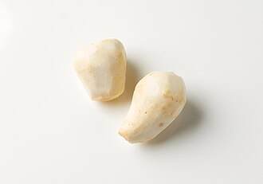

さといも（里芋）の生産量 都道府県ランキング
全26県の順位と、とれた量
さといもが日本でいちばん多くとれるのは埼玉県です。1万7,600 tで、全国（11万8,900 t）の15%を占めます。

| 順位 | 都道府県 | 収穫量 | 全国に占める割合 |
|---|---|---|---|
| 1位 | 埼玉県 | 1万7,600 t | 15% |
| 2位 | 宮崎県 | 1万1,800 t | 9.9% |
| 3位 | 千葉県 | 9,680 t | 8.1% |
| 4位 | 愛媛県 | 8,270 t | 7.0% |
| 5位 | 栃木県 | 5,840 t | 4.9% |
| 6位 | 新潟県 | 5,470 t | 4.6% |
| 7位 | 鹿児島県 | 5,350 t | 4.5% |
| 8位 | 神奈川県 | 4,440 t | 3.7% |
| 9位 | 熊本県 | 4,200 t | 3.5% |
| 10位 | 静岡県 | 3,620 t | 3.0% |
| 11位 | 福井県 | 2,890 t | 2.4% |
| 12位 | 愛知県 | 2,860 t | 2.4% |
| 13位 | 茨城県 | 2,770 t | 2.3% |
| 14位 | 群馬県 | 2,670 t | 2.2% |
| 15位 | 岐阜県 | 2,540 t | 2.1% |
| 16位 | 東京都 | 2,500 t | 2.1% |
| 17位 | 大分県 | 1,960 t | 1.6% |
| 18位 | 福島県 | 1,760 t | 1.5% |
| 19位 | 山形県 | 1,720 t | 1.4% |
| 20位 | 兵庫県 | 1,580 t | 1.3% |
| 21位 | 福岡県 | 1,450 t | 1.2% |
| 22位 | 三重県 | 1,160 t | 1.0% |
| 23位 | 富山県 | 1,000 t | 0.8% |
| 24位 | 大阪府 | 879 t | 0.7% |
| 25位 | 岩手県 | 655 t | 0.6% |
| 26位 | 沖縄県 | 33 t | 0.0% |
さといもの生産量の推移（令和2年産〜令和6年産）
全国の収穫量は、令和2年産の13万9,500 tから令和6年産の11万8,900 tへ、15%減りました。この間、1位はずっと埼玉県です。
| 年 | 全国 | 1位 | 2位 | 3位 |
|---|---|---|---|---|
| 令和6年産 | 11万8,900 t | 埼玉県1万7,600 t | 宮崎県1万1,800 t | 千葉県9,680 t |
| 令和5年産 | 12万6,700 t | 埼玉県1万6,600 t | 宮崎県1万2,300 t | 千葉県1万1,000 t |
| 令和4年産 | 13万8,700 t | 埼玉県1万7,900 t | 宮崎県1万3,600 t | 千葉県1万3,200 t |
| 令和3年産 | 14万2,700 t | 埼玉県1万8,700 t | 千葉県1万4,800 t | 宮崎県1万3,700 t |
| 令和2年産 | 13万9,500 t | 埼玉県1万7,700 t | 千葉県1万4,700 t | 宮崎県1万3,400 t |
この数字について
- 分類：サトイモ科
- 全国の収穫量：11万8,900 t
- この数字が表すもの：収穫量（畑や田でとれた重さ）
- 調査：作物統計調査 作況調査（野菜） 令和6年産
- 26県分を調査（調査していない県は順位に入りません）
さといもの生産量について、よくある質問
- さといもの生産量が日本一の都道府県はどこですか？
- 埼玉県です。作物統計調査 作況調査（野菜）（令和6年産）で1万7,600 tでした。
- さといもの生産量ランキング2位・3位はどこですか？
- 2位は宮崎県（1万1,800 t）、3位は千葉県（9,680 t）です。
- さといもの生産量ランキング4位・5位はどこですか？
- 4位は愛媛県（8,270 t）、5位は栃木県（5,840 t）です。さといもの全26県の順位は上の表のとおりです。
- さといもの全国の生産量はどれくらいですか？
- 11万8,900 t（令和6年産）です。